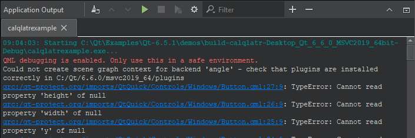
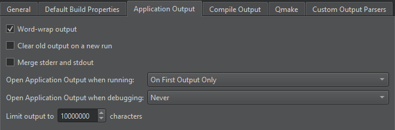

Application Output

If you specify command-line arguments in the run settings that are passed to the application when running it, they are displayed as a part of the application output. For more information, see Desktop Device Run Settings. Select toolbar buttons to run applications, to attach the debugger to the running application, and to stop running or debugging.
Application Output Preferences
To set preferences for displaying application output:
- Select Preferences > Build & Run > Application Output.
- Select the
 (Open Settings Page) button.
(Open Settings Page) button.

You can select whether to open Application Output on output when running or debugging applications, to clear old output on a new run, to word-wrap output, and to limit output to the specified number of lines.
See also View output.